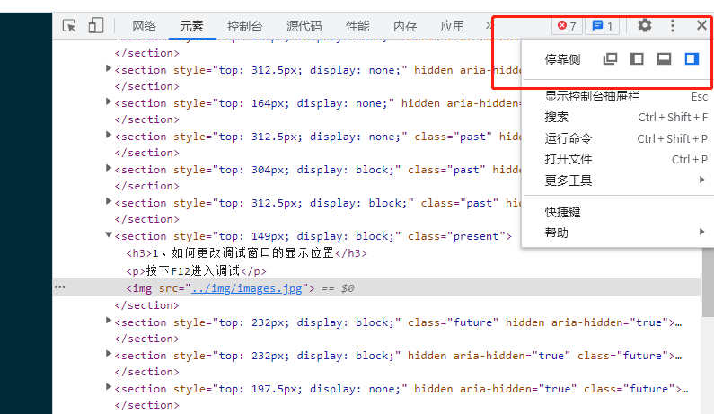

如何使用浏览器的F12调试页面？
分享人：烤鹅
目录
1.背景介绍
2.知识剖析
3.常见问题
4.进阶技巧
5.插件介绍
6.创新分享
一、背景介绍
一个程序员按照要求编写一个网页，不可能一次编写就完全达到目的，一般要对自己的的代码修改调试几次后才能到达要求，浏览器的F12开发人员工具就可以很方便的帮助程序员调试自己的代码。
对于普通人来说，也有有一些好用的技巧；
二、知识剖析
F12 开发人员工具是一套按需采用的工具，网站开发人员可以随时在任何网页上使用 F12 工具，从而快速调试 JavaScript、HTML 和级联样式表 (CSS)，还可以跟踪并查明网页或网络的性能问题。
注：部分电脑打开F12是需要组合键：Fn+F12；例如：Mac，ThinkPad等
三、基础用法
1、如何更改调试窗口的显示位置
按下F12进入调试，点击右侧省略
2、如何选中需要修改的元素，如何进行手机端调试

3、前端基础三件套
网页基本三个层次，即：结构层(HTML)、表示层(CSS)、行为层(Javascript)。
HTML(超文本标记语言): 是用来描述网页的一种语言。
CSS(层叠样式表):样式定义如何显示 HTML 元素
JavaScript:是一种脚本语言，其源代码在发往客户端运行之前不需经过编译，而是将文本格式的字符代码发送给浏览器由浏览器解释运行
四、进阶技巧
元素
在国家公祭日时改变页面颜色
CSS属性filter 将模糊或颜色偏移等图形效果应用于元素。滤镜通常用于调整图像、背景和边框的渲染。
文本、资源禁止复制下载
网络
查看网络请求测试一下
- cookie
- 账号密码
- 爬虫
Chrome控制台
五、插件介绍
GitHub Copilot
GitHub Copilot is an AI pair programmer which suggests line completions and entire function bodies as you type. GitHub Copilot is powered by the OpenAI Codex AI system, trained on public Internet text and billions of lines of code.
Scene and Language